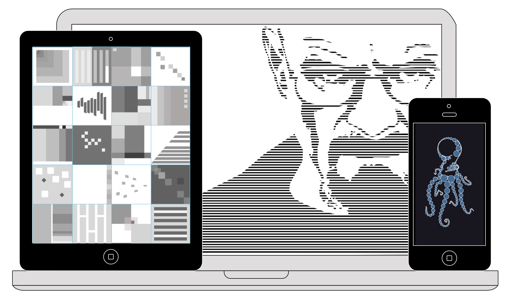

Andrew Whann
Web designer & Student
About Me
What I'm doing:
I'm 19 and currently a student at University of Ulster, learning the ropes of design in my first year studying Interaction Design. During the short time at university I have gained a much deeper appreciation for design, learning how it is used in society for business and shaping user experience. Aswell as design I have been learning web development, you can check out my work on Github.
My Interests:
When I'm not working on a project you can find me cruising around Belfast on my penny board. On the weekends I love to go hiking with my friends and trying my hand at photography. Even though I have a fear of heights and find myself up mountains regularly, I can't get enough of the thrill when cliff diving around the coast.
My Work
This is some of the work that I have produced throughout studying Interaction design at university. Currently I'm learning the of design and typography and learning how to develop webpages. I take inspiration from Dieter Rams and the simplicity of his work. I also like the detailed illustrations done by Si Scott.
Below is some work that I have produced during my time studying the basics of design, looking at point, line and plane. Stripping everything back to just the basics forces you to think outside of the box to come up with something creative and interesting.
Contact
Feel free to drop me an email or tweet me!

Follow me on any of my social media and be sure to get in touch!